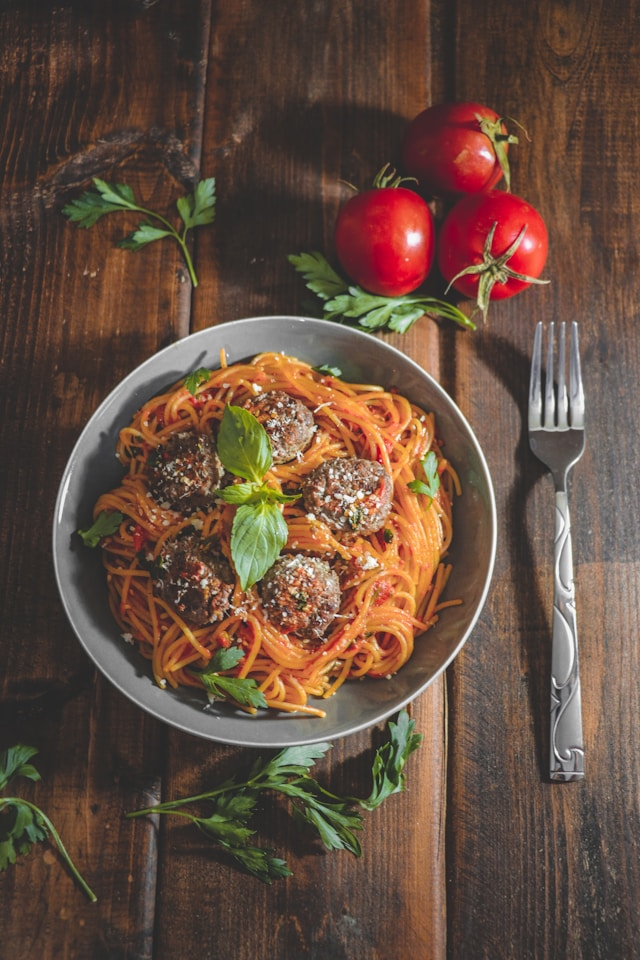

Spaghetti

Description
Delicant spaghetti noodles covered in a delicious tomato sauce and topped with high-protein meatballs.
Ingredients
- 1 pound spaghetti noodles
- 2 tablespoons olive oil
- 1 onion, chopped
- 2 cloves garlic, minced
- 1 can (28 ounces) crushed tomatoes
- 1 teaspoon dried basil
- Salt and pepper to taste
- 1 pound ground beef or turkey (for meatballs)
- 1/2 cup breadcrumbs
- 1 egg
- Grated Parmesan cheese (optional)
Steps
- Cook spaghetti noodles according to package instructions. Drain and set aside.
- In a large skillet, heat olive oil over medium heat. Add chopped onion and minced garlic, sauté until softened.
- Add crushed tomatoes and dried basil to the skillet. Season with salt and pepper. Simmer for 15-20 minutes.
- In a bowl, mix ground meat, breadcrumbs, egg, salt, and pepper. Form into meatballs.
- In another skillet, cook meatballs until browned on all sides and cooked through.
- Combine spaghetti with the sauce and serve topped with meatballs and grated Parmesan cheese if desired.
Back to home